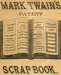
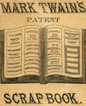

The Whittier Birthday Dinner SpeechTHIS is an occasion peculiarly meet for the digging up of pleasant reminiscences concerning literary folk; therefore I will drop lightly into history myself. Standing here on the shore of the Atlantic and contemplating certain of its largest literary billows, I am reminded of a thing which happened to me thirteen years ago, when I had just succeeded in stirring up a little Nevadian literary puddle myself, whose spume-flakes were beginning to blow thinly Californiaward. I started an inspection tramp through the southern mines of California. I was callow and conceited, and I resolved to try the virtue of my nom de guerre. I very soon had an opportunity. I knocked at a miner's lonely log cabin in the foot-hills of the Sierras just at nightfall. It was snowing at the time. A jaded, melancholy man of fifty, barefooted, opened the door to me. When he heard my nom de guerre he looked more dejected than before. He let me in -- pretty reluctantly, I thought -- and after the customary bacon and beans, black coffee and hot whiskey, I took a pipe. This sorrowful man had not said three words up to this time. Now he spoke up and said, in the voice of one who is secretly suffering, "You're the fourth -- I'm going to move." "The fourth what?" said I. "The fourth littery man that has been here in twenty-four hours -- I'm going to move." "You don't tell me!" said I; "who were the others?" "Mr. Longfellow, Mr. Emerson, and Mr. Oliver Wendell Holmes -- consound the lot!" You can easily believe I was interested. I supplicated -- three hot whiskeys did the rest -- and finally the melancholy miner began. Said he: "They came here just at dark yesterday evening, and I let them in of course. Said they were going to the Yosemite. They were a rough lot, but that's nothing; everybody looks rough that travels afoot. Mr. Emerson was a seedy little bit of a chap, red-headed. Mr. Holmes was as fat as a balloon; he weighed as much as three hundred, and had double chins all the way down to his stomach. Mr. Longfellow was built like a prize-fighter. His head was cropped and bristly, like as if he had a wig made of hair-brushes. His nose lay straight down his face, like a finger with the end joint tilted up. They had been drinking, I could see that. And what queer talk they used! Mr. Holmes inspected this cabin, then he took me by the buttonhole, and says he: "'Through the deep caves of thought "Says I, 'I can't afford it, Mr. Holmes, and moreover I don't want to.' Blamed if I liked it pretty well, either, coming from a stranger, that way. However, I started to get out my bacon and beans, when Mr. Emerson came and looked on awhile, and then he takes me aside by the buttonhole and says: "'Give me agates for my meat; "Says I, 'Mr. Emerson, if you'll excuse me, this ain't no hotel.' You see it sort of riled me -- I warn't used to the ways of littery swells. But I went on a-sweating over my work, and next comes Mr. Longfellow and buttonholes me, and interrupts me. Says he: "'Honor be to Mudjekeewis! "But I broke in, and says I, 'Beg your pardon, Mr. Longfellow, if you'll be so kind as to hold your yawp for about five minutes and let me get this grub ready, you'll do me proud.' Well, sir, after they'd filled up I set out the jug. Mr. Holmes looks at it, and then he fires up all of a sudden and yells: "'Flash out a stream of blood-red wine! "By George, I was getting kind of worked up. I don't deny it, I was getting kind of worked up. I turns to Mr. Holmes, and says I, 'Looky here, my fat friend, I'm a-running this shanty, and if the court knows herself, you'll take whiskey straight or you'll go dry.' Them's the very words I said to him. Now I don't want to sass such famous littery people, but you see they kind of forced me. There ain't nothing onreasonable 'bout me; I don't mind a passer of guests a-treadin' on my tail three or four times, but when it comes to standing on it it's different, 'and if the court knows herself,' I says, 'you'll take whiskey straight or you'll go dry.' Well, between drinks they'd swell around the cabin and strike attitudes and spout; and pretty soon they got out a greasy old deck and went to playing euchre at ten cents a corner -- on trust. I began to notice some pretty suspicious things. Mr. Emerson dealt, looked at his hand, shook his head, says: "'I am the doubter and the doubt --' and ca'mly bunched the hands and went to shuffling for a new layout. Says he: "'They reckon ill who leave me out; Hang'd if he didn't go ahead and do it, too! Oh, he was a cool one! Well, in a minute things were running pretty tight, but all of a sudden I see by Mr. Emerson's eye he judged he had 'em. He had already corralled two tricks, and each of the others one. So now he kind of lifts a little in his chair and says: "'I tire of globes and aces! -- -- and down he fetched a right bower. Mr. Longfellow smiles as sweet as pie and says: "'Thanks, thanks to thee, my worthy friend, -- and blamed if he didn't down with another right bower! Emerson claps his hand on his bowie, Longfellow claps his on his revolver, and I went under a bunk. There was going to be trouble; but that monstrous Holmes rose up, wobbling his double chins, and says he, 'Order, gentlemen; the first man that draws, I'll lay down on him and smother him!' All quiet on the Potomac, you bet! "They were pretty how-come-you-so by now, and they begun to blow. Emerson says, 'The nobbiest thing I ever wrote was " Barbara Frietchie."' Says Longfellow, 'It don't begin with my "Biglow Papers."' Says Holmes, 'My "Thanatopsis" lays over 'em both.' They mighty near ended in a fight. Then they wished they had some more company -- and Mr. Emerson pointed to me and says: "'Is yonder squalid peasant all He was a-whetting his bowie on his boot -- so I let it pass. Well, sir, next they took it into their heads that they would like some music; so they made me stand up and sing "When Johnny Comes Marching Home" till I dropped -- at thirteen minutes past four this morning. That's what I've been through, my friend. When I woke at seven, they were leaving, thank goodness, and Mr. Longfellow had my only boots on, and his'n under his arm. Says I, 'Hold on, there, Evangeline, what are you going to do with them?' He says, 'Going to make tracks with 'em; because: "'Lives of great men all remind us As I said, Mr. Twain, you are the fourth in twenty-four hours -- and I'm going to move; I ain't suited to a littery atmosphere." I said to the miner, "Why, my dear sir, these were not the gracious singers to whom we and the world pay loving reverence alla homage; these were impostors." The miner investigated me with a calm eye for a while; then said he, "Ah! impostors, were they? Are you? I did not pursue the subject, and since then I have not travelled on my nom de guerre enough to hurt. Such was the reminiscence I was moved to contribute, Mr. Chairman. In my enthusiasm I may have exaggerated the details a little, but you will easily forgive me that fault, since I believe it is the first time I have ever deflected from perpendicular fact on an occasion like this. [From Mark Twain's Speeches (New York: Harper & Brothers, 1910): 1-16.] |
 
